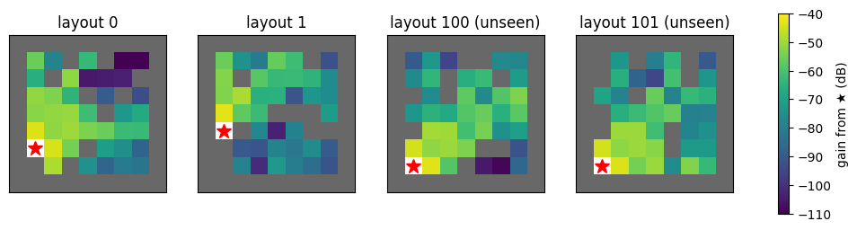
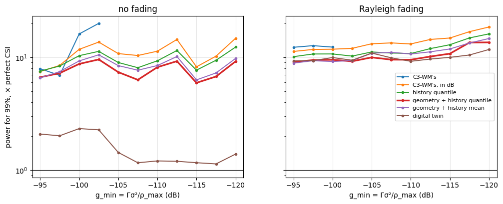

import math
import matplotlib.pyplot as plt
import numpy as np
from sklearn.ensemble import HistGradientBoostingRegressor
from comm_core import *Power control on new layouts
Predicting the channel well enough to reach a target SNR with a chosen reliability, in layouts the predictor has never seen: what to learn from, how to set the margin, and when to withhold a transmission.
Power control without channel knowledge compares predictors in one fixed room. In an application, the layout changes from episode to episode and the agents start anywhere, so a predictor has to work in layouts it has never seen. This example takes the same link, C3-WM’s (49 codebook tokens of 8 bits, uncoded BPSK, channel inversion to a target SNR Γ), in ray-traced layouts of MultiGrid’s FindGoal, and asks how to set the power so that a chosen share 1 − ε of the transmissions reach Γ, with as little power as possible:
minimize ρ subject to P(SNR(ρ) ≥ Γ) ≥ 1 − ε, 0 ≤ ρ ≤ ρ_maxThe transmitter does not know the current gain g = |h|². It predicts it (ĝ) from what it knows, and sends at ρ̂ = κ Γσ²/ĝ, with a margin κ against the prediction’s errors. When ρ̂ exceeds ρ_max, it either withholds the transmission or sends at ρ_max anyway.
The questions: what to predict from (the link’s past gains, the agents’ moves, the layout’s geometry, a ray-traced map), how to set the margin for layouts not seen yet, and when to withhold. Everything is fit on some layouts, tuned on others, and judged on layouts neither saw.
The layouts
40 layouts of MultiGrid’s FindGoal (9 × 9, walls scattered inside), each ray-traced with Sionna RT at 2.4 GHz (5 bounces) between every pair of free cells. The file holds each pair’s gain |h|² in dB, the free cells and the wall grid. It was made with stable-marl’s trace_layouts (Sionna RT through trace_paths), then the gains converted to dB:
from stable_marl.envs.multigrid.sionna_export import trace_layouts
trace_layouts('MultiGrid-FindGoal-15x15-v0', [*range(30), *range(100, 110)], 'layouts',
env_kwargs=dict(agents=2, size=9, num_obstacles=0), frequency=2.4e9, max_depth=5)data = np.load('data/findgoal_layouts.npz')
DIRS = [(1, 0), (0, 1), (-1, 0), (0, -1)]
class Layout:
"One ray-traced layout: the gain between any two free cells, and the walls between them."
def __init__(self, k):
self.seed = int(data['seeds'][k])
self.cells = [tuple(int(v) for v in c) for c in data['cells'][k]]
self.idx = {c: i for i, c in enumerate(self.cells)}
self.G = 10 ** (data['gain_db'][k].astype(float) / 10) # G[rx, tx]
self.walls = data['walls'][k] # walls[x, y]
def gain(self, tx, rx):
return self.G[self.idx[rx], self.idx[tx]]
def geometry(self, a, b):
"Distance (cells) and the number of wall cells the straight line between the two cell centres crosses."
n = max(int(abs(a[0] - b[0]) + abs(a[1] - b[1])) * 4, 1)
xs, ys = np.linspace(a[0], b[0], n + 1), np.linspace(a[1], b[1], n + 1)
crossed = {(int(round(x)), int(round(y))) for x, y in zip(xs, ys)} - {a, b}
return math.hypot(a[0] - b[0], a[1] - b[1]), int(sum(self.walls[c] for c in crossed))
layouts = {int(s): Layout(k) for k, s in enumerate(data['seeds'])}
FIT, CALIBRATION, TEST = range(0, 24), range(24, 30), range(100, 110)
print(f'{len(layouts)} layouts, {len(layouts[0].cells)} free cells each')40 layouts, 39 free cells eachfig, axes = plt.subplots(1, 4, figsize=(13, 3.4))
for ax, seed in zip(axes, (0, 1, 100, 101)):
lay, tx = layouts[seed], layouts[seed].cells[0]
img = np.full(lay.walls.shape, np.nan)
for c in lay.cells:
img[c] = 10 * np.log10(lay.gain(tx, c)) if c != tx else np.nan
im = ax.imshow(img.T, origin='lower', cmap='viridis', vmin=-110, vmax=-40)
ax.imshow(np.where(lay.walls.T, 1.0, np.nan), origin='lower', cmap='Greys', vmin=0, vmax=1.5)
ax.plot(*tx, 'r*', ms=12)
ax.set(title=f'layout {seed}' + (' (unseen)' if seed >= 100 else ''), xticks=[], yticks=[])
fig.colorbar(im, ax=axes, label='gain from ★ (dB)', shrink=0.85)
plt.show()
The agents
Two agents move at random, as with a random policy in FindGoal: at each step each one turns left, turns right, steps forward (unless a wall or the other agent is there) or does nothing. They start in distinct random cells with random headings. (FindGoal also has a goal, which takes an agent off the grid; there is none here.)
STEPS, HISTORY, ROLLOUTS = 60, 4, 5
def walk(lay, seed):
"One episode: per step, both agents' cells and headings."
rng = np.random.default_rng(seed)
free = set(lay.cells)
pos = [lay.cells[k] for k in rng.choice(len(lay.cells), 2, replace=False)]
head = [int(h) for h in rng.integers(4, size=2)]
out = []
for _ in range(STEPS):
out.append((tuple(pos), tuple(head)))
for a in rng.permutation(2):
action = rng.integers(4) # left, right, forward, nothing
if action < 2:
head[a] = (head[a] + (1 if action else -1)) % 4
elif action == 2:
ahead = (pos[a][0] + DIRS[head[a]][0], pos[a][1] + DIRS[head[a]][1])
if ahead in free and ahead != pos[1 - a]:
pos[a] = ahead
return outWhat the transmitter knows
For each directed link and step t ≥ 4, what transmitter j knows when it sends to i:
- The link’s last 4 gains, fed back by the receiver (C3-WM’s
x̃). - Whether anyone moved: the transmitter itself, this step (its own move), and the receiver, a step ago (its report arrives with a step’s delay, like the gains).
- Where the receiver was a step ago, and its heading. Since then, it has stayed or stepped ahead: the receiver’s possible cells.
- The layout’s walls, for the geometry between the two agents: the distance and the number of walls in between.
Optionally, small-scale fading on top of the ray-traced gain: Rayleigh, redrawn whenever an agent moves (it moves many wavelengths), and drifting slowly while both stand still.
db = lambda g: 10 * np.log10(np.maximum(g, 1e-30))
def fading(episode, seed, rho=0.95):
"|g_t|² of a pair's Rayleigh fading: redrawn when an agent moves, drifting slowly while both stand still."
rng = np.random.default_rng(10_000 + seed)
draw = lambda: (rng.standard_normal() + 1j * rng.standard_normal()) / np.sqrt(2)
g, out = draw(), []
for t in range(len(episode)):
if t and episode[t][0] != episode[t - 1][0]:
g = draw()
elif t:
g = rho * g + np.sqrt(1 - rho ** 2) * draw()
out.append(abs(g) ** 2)
return np.array(out)
def samples(seeds, faded):
"Per directed link and step: what the transmitter knows, and the true gain."
out = []
for seed in seeds:
lay = layouts[seed]
for k in range(ROLLOUTS):
episode = walk(lay, 1000 * seed + k)
fade = fading(episode, 1000 * seed + k) if faded else np.ones(len(episode))
for j, i in ((0, 1), (1, 0)):
g = [lay.gain(cells[j], cells[i]) * f for (cells, _), f in zip(episode, fade)]
for t in range(HISTORY, len(episode)):
(now, _), (before, heads), (earlier, _) = episode[t], episode[t - 1], episode[t - 2]
ahead = (before[i][0] + DIRS[heads[i]][0], before[i][1] + DIRS[heads[i]][1])
possible = [c for c in (before[i], ahead) if c in lay.idx and c != now[j]] or [before[i]]
out.append(dict(lay=lay, tx=now[j], rx=now[i], possible=possible, past=np.array(g[t - HISTORY:t][::-1]),
moved=[float(now[j] != before[j]), float(before[i] != earlier[i])], gain=g[t]))
return outThe predictors
Each predicts the gain ĝ of the current transmission:
| predictor | uses | model |
|---|---|---|
| C3-WM’s | last 4 gains | linear in |h|² (fit_gain_predictor, eq. 24) |
| C3-WM’s, in dB | last 4 gains | linear in dB (fit_gain_predictor(..., domain='db')) |
| history quantile | last 4 gains, moves | gradient-boosted trees, 5% quantile of the gain in dB |
| geometry + history quantile | the same, and the geometry to each possible cell | gradient-boosted trees, 5% quantile; the lowest over the possible cells |
| geometry + history mean | the same | gradient-boosted trees, mean (in dB); the lowest over the possible cells |
| digital twin | a ray-traced map of the layout | the map’s lowest gain over the possible cells |
The quantile models predict a gain the true one exceeds 95% of the time: they are cautious by construction. The geometry models are trained on the receiver’s actual cell, and used on each of its possible cells. The digital twin needs every new layout ray-traced; it is the reference.
def features(r, cell):
distance, walls = r['lay'].geometry(r['tx'], cell)
return [math.log10(max(distance, 0.5)), distance, walls] + list(db(r['past'])) + r['moved']
def lowest(model):
"The model's prediction for each of the receiver's possible cells: the lowest."
def predict(rs):
pairs = [(k, c) for k, r in enumerate(rs) for c in r['possible']]
out = np.full(len(rs), np.inf)
np.minimum.at(out, [k for k, _ in pairs], model.predict(np.array([features(rs[k], c) for k, c in pairs])))
return 10 ** (out / 10)
return predict
def predictors(fit):
"name -> predict(samples) -> ĝ; everything learned from `fit` only."
y = db(np.array([r['gain'] for r in fit]))
sequences = [np.r_[r['past'][::-1], r['gain']] for r in fit]
psi, psi_db = fit_gain_predictor(sequences, history=HISTORY), fit_gain_predictor(sequences, history=HISTORY, domain='db')
trees = lambda **kw: HistGradientBoostingRegressor(max_iter=400, learning_rate=0.05, early_stopping=False, random_state=0, **kw)
history = lambda rs: np.c_[db(np.stack([r['past'] for r in rs])), [r['moved'] for r in rs]]
quantile = trees(loss='quantile', quantile=0.05).fit(history(fit), y)
X = np.array([features(r, r['rx']) for r in fit])
return {
"C3-WM's": lambda rs: np.array([max(psi(r['past']), 0.0) for r in rs]),
"C3-WM's, in dB": lambda rs: np.array([psi_db(r['past']) for r in rs]),
'history quantile': lambda rs: 10 ** (quantile.predict(history(rs)) / 10),
'geometry + history quantile': lowest(trees(loss='quantile', quantile=0.05).fit(X, y)),
'geometry + history mean': lowest(trees(loss='squared_error').fit(X, y)),
'digital twin': lambda rs: np.array([min(r['lay'].gain(r['tx'], c) for c in r['possible']) for r in rs]),
}Judging a predictor
A transmission is servable if perfect CSI could deliver it: its gain is at least g_min = Γσ²/ρ_max. A predictor is judged by two numbers:
- Reliability: the share of the servable transmissions that reach
Γ. - Power: the mean transmit power, relative to perfect CSI’s, which spends exactly
Γσ²/gon each servable transmission and nothing on the others.
Only high targets (95% and 99%) are compared: at lower ones, a predictor can look cheap by giving up the weakest links, which take most of the power.
Each predictor is deployed with a margin κ, ρ̂ = 10^(κ/10) Γσ²/ĝ, and a scheduling threshold τ: the transmission is sent if ρ̂ ≤ 10^(τ/10) ρ_max, at min(ρ̂, ρ_max), and withheld otherwise. τ = 0 is C3-WM’s rule (δ = 1(ρ̂ ≤ ρ_max)); τ = ∞ never withholds (best effort). κ, and τ when it is tuned, are chosen on calibration layouts: the cheapest pair that reaches the target there. The link budget: Γ = 10 dB, σ² = −94 dBm, ρ_max = 20 dBm.
SNR_TARGET_DB, NOISE_DBM, MAX_POWER_DBM = 10.0, -94.0, 20.0
G_MIN = 10 ** ((SNR_TARGET_DB + NOISE_DBM - MAX_POWER_DBM) / 10) # Γσ²/ρ_max
MARGINS = np.arange(-10, 40.01, 0.25) # κ, dB
TAUS = (0.0, 1, 2, 3, 4, 5, 6, 8, 10, 12, 15, 20, 25, 30, math.inf) # τ, dB
print(f'g_min = {db(G_MIN):.0f} dB')
def outcome(estimate, gain, g_min=G_MIN, tau=0.0):
"""Per margin κ: the share of the servable transmissions reaching Γ, the mean power (× perfect CSI's), the share
withheld, and the per-transmission power (in units of Γσ²). τ: withhold when ρ̂ > τ ρ_max (dB); inf: never."""
max_power, servable, need = 1 / g_min, gain >= g_min, 1 / gain
rho = 10 ** (MARGINS[:, None] / 10) / np.maximum(estimate, 1e-30)[None, :]
sent = rho <= max_power * 10 ** (tau / 10) if np.isfinite(tau) else np.ones_like(rho, bool)
power = np.where(sent, np.minimum(rho, max_power), 0)
reached = sent & (power >= need * (1 - 1e-9))
perfect = np.where(servable, need, 0).mean()
return reached[:, servable].mean(1), power.mean(1) / perfect, 1 - sent.mean(1), power
def deploy(name, faded, target, g_min=G_MIN, taus=(0.0,)):
"""κ (and τ, from `taus`) chosen on the calibration layouts, the cheapest reaching `target` there (else the most
reliable); then used on the unseen layouts."""
(cal, cal_gain), (test, test_gain) = runs[faded][name]
best = None
for tau in taus:
reached, power, _, _ = outcome(cal, cal_gain, g_min, tau)
for k in range(len(MARGINS)):
key = (reached[k] >= target, -power[k] if reached[k] >= target else reached[k])
if best is None or key > best[0]:
best = (key, tau, k)
(met, _), tau, k = best
reached, power, withheld, per_transmission = outcome(test, test_gain, g_min, tau)
return dict(reached=reached[k], power=power[k], withheld=withheld[k], margin=MARGINS[k], tau=tau, met=met,
per_transmission=per_transmission[k])g_min = -104 dBOn new layouts
The models are fit on layouts 0–23, the margins are chosen on layouts 24–29, and everything is judged on layouts 100–109, which neither saw. Without fading, then with it:
runs = {}
for faded in (False, True):
fit, cal, test = samples(FIT, faded), samples(CALIBRATION, faded), samples(TEST, faded)
gains = lambda rs: np.array([r['gain'] for r in rs])
runs[faded] = {name: ((p(cal), gains(cal)), (p(test), gains(test))) for name, p in predictors(fit).items()}
print(f"{'Rayleigh fading' if faded else 'no fading'}: {len(fit)} / {len(cal)} / {len(test)} transmissions "
f"(fit / calibration / unseen); {100 * (gains(test) >= G_MIN).mean():.1f}% of the unseen ones servable")no fading: 13440 / 3360 / 5600 transmissions (fit / calibration / unseen); 93.7% of the unseen ones servable
Rayleigh fading: 13440 / 3360 / 5600 transmissions (fit / calibration / unseen); 91.9% of the unseen ones servabledef table(faded, rules=(((0.0,), 'withhold (τ = 0)'), ((math.inf,), 'best effort (τ = ∞)'), (TAUS, 'tuned τ')), targets=(0.95, 0.99)):
print(f"{'Rayleigh fading' if faded else 'no fading'}: reliability reached on the unseen layouts, "
f"power (× perfect CSI); ✗: target not reached on the calibration layouts")
print(f"{'':28s}" + ''.join(f'{label:>34s}' for _, label in rules))
print(f"{'':28s}" + ''.join(f'{100 * t:>16.0f}%' for _ in rules for t in targets))
for name in runs[faded]:
row = [deploy(name, faded, t, taus=taus) for taus, _ in rules for t in targets]
print(f'{name:28s}' + ''.join(f"{100 * d['reached']:8.1f}% {d['power']:5.1f}×{' ' if d['met'] else '✗'}" for d in row))
table(False)
print()
table(True)no fading: reliability reached on the unseen layouts, power (× perfect CSI); ✗: target not reached on the calibration layouts
withhold (τ = 0) best effort (τ = ∞) tuned τ
95% 99% 95% 99% 95% 99%
C3-WM's 96.6% 6.1× 98.1% 13.7×✗ 96.5% 5.2× 98.2% 13.8×✗ 96.5% 5.2× 98.2% 13.8×✗
C3-WM's, in dB 87.9% 1.6×✗ 87.9% 1.6×✗ 95.0% 4.5× 99.2% 10.1× 94.7% 3.2× 99.1% 9.8×
history quantile 89.9% 1.1×✗ 89.9% 1.1×✗ 95.4% 4.4× 98.9% 8.2× 94.8% 3.7× 98.9% 8.2×
geometry + history quantile 92.2% 1.3×✗ 92.2% 1.3×✗ 94.9% 4.0× 99.0% 6.8× 94.4% 2.0× 99.0% 6.8×
geometry + history mean 89.1% 1.4×✗ 89.1% 1.4×✗ 94.3% 4.0× 99.0% 7.7× 94.6% 2.8× 99.0% 7.7×
digital twin 97.7% 1.1× 98.6% 1.1×✗ 100.0% 3.4× 100.0% 3.4× 97.7% 1.1× 98.9% 1.5×
Rayleigh fading: reliability reached on the unseen layouts, power (× perfect CSI); ✗: target not reached on the calibration layouts
withhold (τ = 0) best effort (τ = ∞) tuned τ
95% 99% 95% 99% 95% 99%
C3-WM's 93.0% 3.1× 97.3% 9.2×✗ 93.0% 3.1× 97.3% 9.2×✗ 93.0% 3.1× 97.3% 9.2×✗
C3-WM's, in dB 86.8% 1.6×✗ 86.8% 1.6×✗ 95.4% 6.1× 99.3% 12.3× 95.4% 5.1× 99.2% 12.5×
history quantile 85.9% 1.6×✗ 85.9% 1.6×✗ 95.2% 6.1× 99.0% 10.7× 95.2% 5.2× 99.0% 10.7×
geometry + history quantile 86.6% 1.5×✗ 86.6% 1.5×✗ 94.8% 5.7× 99.2% 9.5× 94.5% 4.2× 99.2% 9.5×
geometry + history mean 87.2% 1.7×✗ 87.2% 1.7×✗ 95.3% 5.7× 99.3% 10.5× 94.9% 4.1× 99.2% 9.9×
digital twin 84.4% 1.7×✗ 84.4% 1.7×✗ 94.8% 6.5× 99.2% 9.7× 94.5% 5.0× 99.2% 9.8× - C3-WM’s predictor can’t be made reliable. Fit on
|h|², it overestimates weak links (the fit is dominated by the strong ones), and a margin can’t fix an error that depends on the link’s strength: it never reaches 99%. Fit in dB, the same linear predictor is unbiased, and reaches both targets. - Withholding as soon as
ρ̂ > ρ_max(τ = 0) caps the reliability of a cautious predictor. None of the learned ones reaches 95% that way, except C3-WM’s fit on|h|²without fading, which rarely predicts more thanρ_max(it is optimistic about weak links, and fails them instead). The margin that rescues underestimated transmissions also pushes others overρ_max, where they are withheld although they would have succeeded. - The margins transfer. Chosen on 6 layouts, they land within 0.7 percentage points of the target on the 10 unseen ones.
- The layout’s geometry helps. At 99% without fading, the geometry + history quantile needs 6.8× perfect CSI’s power, the history alone 8.2×, C3-WM’s in dB 9.8×.
- Fading levels the field. With fading, every predictor needs 10–12× for 99%, the digital twin included: the fading is redrawn whenever an agent moves, so no one can predict it, and its unpredictable part sets the cost. Without fading, the digital twin’s map is exact and it needs 1.5×.
- Tuning
τpays at 95% (2.0× instead of 4.0× for the geometry model without fading). At 99%, the tunedτis large or infinite, and the power within 6% of best effort’s: to lose only 1%, little can be withheld.
The link budget
Γ, σ² and ρ_max matter only through g_min = Γσ²/ρ_max, the weakest gain a link can have and still be served: raising Γ by 3 dB is the same as lowering ρ_max by 3 dB. The power each predictor needs for 99%, with the threshold τ tuned, from a tight budget (left) to a loose one:
G_SWEEP_DB = np.arange(-95, -120.1, -2.5)
fig, axes = plt.subplots(1, 2, figsize=(12, 4.2), sharey=True)
for ax, faded in zip(axes, (False, True)):
for name in runs[faded]:
power = [deploy(name, faded, 0.99, 10 ** (g / 10), taus=TAUS) for g in G_SWEEP_DB]
ax.plot(G_SWEEP_DB, [d['power'] if d['met'] else np.nan for d in power], 'o-', ms=3,
lw=2.4 if name == 'geometry + history quantile' else 1.4, label=name)
ax.axhline(1, color='k', lw=0.8)
ax.set(title='Rayleigh fading' if faded else 'no fading', xlabel='g_min = Γσ²/ρ_max (dB)', yscale='log',
xlim=(G_SWEEP_DB[0] + 1, G_SWEEP_DB[-1] - 1))
ax.grid(alpha=0.3)
axes[0].set_ylabel('power for 99%, × perfect CSI')
axes[1].legend(fontsize=8)
plt.show()
Without fading, the learned predictors (C3-WM’s aside) need 6–15× perfect CSI’s power for 99%, and the digital twin 1.1–2.3×. With fading, all of them need 9–18×, and the twin’s advantage is gone. C3-WM’s predictor reaches 99% only on the tightest budgets, where the weak links it overestimates are not servable anyway. The geometry + history models are the cheapest learned ones over the whole range.
What the agents receive
Reaching Γ is not the same as arriving intact. A message is 49 tokens of 8 bits over uncoded BPSK, so at the SNR it gets, each bit is wrong with probability Q(√(2 SNR)). With the margins chosen above, the share of the servable messages that arrive with no bit error, and the share of wrong tokens in those sent, for two targets Γ (at the same g_min, so with ρ_max scaled along: the reliability results above don’t change):
erfc = np.vectorize(math.erfc)
TOKENS, BITS = 49, 8
def received(power, gain, snr_target_db):
"(error-free share of the servable messages, wrong-token share in the servable messages sent)."
servable, sent = gain >= G_MIN, power > 0
ber = 0.5 * erfc(np.sqrt(10 ** (snr_target_db / 10) * power * gain))
clean = np.where(sent, (1 - ber) ** (TOKENS * BITS), 0)[servable].mean()
return clean, (1 - (1 - ber[sent & servable]) ** BITS).mean()
for faded in (False, True):
gain = runs[faded]['digital twin'][1][1]
print(f"{'Rayleigh fading' if faded else 'no fading'}, tuned τ, target 99%: error-free / wrong tokens")
print(f"{'':28s}{'Γ = 7 dB':>22s}{'Γ = 10 dB':>22s}")
exact = np.where(gain >= G_MIN, 1 / gain, 0)
print(f"{'perfect CSI (exactly Γ)':28s}" + ''.join(f'{100 * c:12.1f}% {100 * w:6.2f}% ' for c, w in (received(exact, gain, s) for s in (7, 10))))
for name in runs[faded]:
d = deploy(name, faded, 0.99, taus=TAUS)
print(f'{name:28s}' + ''.join(f'{100 * c:12.1f}% {100 * w:6.2f}% ' for c, w in (received(d["per_transmission"], gain, s) for s in (7, 10))))
print()no fading, tuned τ, target 99%: error-free / wrong tokens
Γ = 7 dB Γ = 10 dB
perfect CSI (exactly Γ) 73.9% 0.62% 99.8% 0.00%
C3-WM's 99.0% 0.03% 100.0% 0.00%
C3-WM's, in dB 98.9% 0.16% 99.4% 0.08%
history quantile 98.9% 0.35% 99.5% 0.22%
geometry + history quantile 99.0% 0.24% 99.5% 0.10%
geometry + history mean 98.8% 0.22% 99.4% 0.10%
digital twin 79.4% 0.46% 98.8% 0.00%
Rayleigh fading, tuned τ, target 99%: error-free / wrong tokens
Γ = 7 dB Γ = 10 dB
perfect CSI (exactly Γ) 73.9% 0.62% 99.8% 0.00%
C3-WM's 97.8% 0.12% 99.8% 0.01%
C3-WM's, in dB 99.1% 0.15% 99.4% 0.08%
history quantile 99.0% 0.32% 99.5% 0.21%
geometry + history quantile 99.2% 0.14% 99.7% 0.04%
geometry + history mean 99.1% 0.13% 99.5% 0.06%
digital twin 99.1% 0.11% 99.4% 0.04%
- At
Γ = 7 dB, reachingΓis not arriving intact. Even perfect CSI delivers only 74% of the messages without a bit error: at exactlyΓ, a bit is wrong with probability8·10⁻⁴, and a message has 392 of them. The learned predictors deliver about 99% error-free, because their margins put most transmissions well aboveΓ. The digital twin without fading, accurate and with little margin, delivers 79%. - At
Γ = 10 dB, the two agree. Perfect CSI delivers 99.8% error-free, every predictor about its reliability, and under 0.25% of the tokens are wrong.
So Γ belongs to the message: about 10 dB makes “reaching Γ” mean “arriving intact” for 392 uncoded bits. The reliability and power results above don’t depend on it, only on g_min.
When to withhold a transmission
C3-WM withholds a transmission when its predicted power exceeds the budget (δ = 1(ρ̂ ≤ ρ_max)); best effort never does, and sends at ρ_max. Between the two, a threshold τ: withhold only when ρ̂ > τ ρ_max, otherwise send at min(ρ̂, ρ_max). Here τ is chosen on the calibration layouts together with the margin, the cheapest pair reaching the target:
name = 'geometry + history quantile'
for faded in (False, True):
print(f"{name}, {'Rayleigh fading' if faded else 'no fading'}: reliability / power (× perfect CSI) / withheld")
print(f"{'g_min':>8s}{'target':>8s}{'withhold (τ = 0)':>27s}{'best effort (τ = ∞)':>27s}{'tuned τ':>38s}")
for g in (-95, -100, -104):
for target in (0.95, 0.99):
row = [deploy(name, faded, target, 10 ** (g / 10), taus=t) for t in ((0.0,), (math.inf,), TAUS)]
cells = [f"{100 * d['reached']:6.1f}% {d['power']:5.1f}× {100 * d['withheld']:4.1f}%{' ' if d['met'] else '✗'}" for d in row]
tau = row[2]['tau']
print(f'{g:5d} dB{100 * target:7.0f}%' + ''.join(f'{c:>27s}' for c in cells[:2]) + f"{'τ = ' + ('∞' if math.isinf(tau) else f'{tau:g} dB'):>14s}{cells[2]:>24s}")
print()geometry + history quantile, no fading: reliability / power (× perfect CSI) / withheld
g_min target withhold (τ = 0) best effort (τ = ∞) tuned τ
-95 dB 95% 88.3% 1.3× 18.5%✗ 95.4% 4.5× 0.0% τ = 6 dB 94.6% 2.6× 12.2%
-95 dB 99% 88.3% 1.3× 18.5%✗ 99.2% 6.7× 0.0% τ = ∞ 99.2% 6.7× 0.0%
-100 dB 95% 92.4% 1.9× 13.2%✗ 94.6% 5.4× 0.0% τ = 8 dB 94.8% 3.2× 7.9%
-100 dB 99% 92.4% 1.9× 13.2%✗ 99.1% 8.7× 0.0% τ = ∞ 99.1% 8.7× 0.0%
-104 dB 95% 92.2% 1.3× 9.7%✗ 94.9% 4.0× 0.0% τ = 6 dB 94.4% 2.0× 7.2%
-104 dB 99% 92.2% 1.3× 9.7%✗ 99.0% 6.8× 0.0% τ = ∞ 99.0% 6.8× 0.0%
geometry + history quantile, Rayleigh fading: reliability / power (× perfect CSI) / withheld
g_min target withhold (τ = 0) best effort (τ = ∞) tuned τ
-95 dB 95% 81.9% 1.3× 25.4%✗ 94.9% 6.1× 0.0% τ = 15 dB 94.5% 4.4× 11.2%
-95 dB 99% 81.9% 1.3× 25.4%✗ 99.2% 9.1× 0.0% τ = ∞ 99.2% 9.1× 0.0%
-100 dB 95% 84.5% 1.4× 19.3%✗ 94.8% 6.0× 0.0% τ = 12 dB 94.5% 4.3× 9.7%
-100 dB 99% 84.5% 1.4× 19.3%✗ 99.3% 9.5× 0.0% τ = ∞ 99.3% 9.5× 0.0%
-104 dB 95% 86.6% 1.5× 15.2%✗ 94.8% 5.7× 0.0% τ = 10 dB 94.5% 4.2× 8.6%
-104 dB 99% 86.6% 1.5× 15.2%✗ 99.2% 9.5× 0.0% τ = ∞ 99.2% 9.5× 0.0%
- At 95%, a tuned threshold saves power. With
τbetween 6 and 15 dB, the transmitter withholds the 7–12% of transmissions predicted far beyond the budget, and spends half of best effort’s power without fading (2.0–3.2× instead of 4.0–5.4×), and a quarter less with fading (4.2–4.4× instead of 5.7–6.1×). - At 99%, it is best effort:
τ = ∞on every budget. To lose only 1%, no transmission can be withheld. - Withholding at
ρ̂ > ρ_max(τ = 0) reaches 82–92% at most. - Tuned on 6 layouts,
τslightly undershoots on new ones (94.4–94.8% for a 95% target). If the target must hold, tune for a slightly higher one, or keepτabove a few dB.
The same through a network
The learned predictor as a comm-core power control: LearnedChannelInversion keeps each link’s past gains (known after each transmission, as the receiver feeds them back), notes where the nodes are at every round (the receiver’s cell and heading reach the transmitter a round late), and allocates with the margin and threshold chosen above for 99%. Here it runs through a LinkLevelChannel, every bit of every message, on the unseen layouts without fading:
class LearnedChannelInversion(PowerControl):
"Channel inversion with a learned gain prediction (`features` -> dB), the lowest over the receiver's possible cells."
def __init__(self, model, layout, fading, headings, target_snr_db, max_power, margin_db=0.0, tau_db=math.inf):
self.model, self.layout, self.fading, self.headings = model, layout, fading, headings
self.target_snr_db, self.max_power, self.margin_db, self.tau_db = target_snr_db, max_power, margin_db, tau_db
self.reset()
def reset(self, seed=None):
self._past, self._rounds = {}, []
def update(self, time):
"A new round: where the nodes are now, and their headings; the last rounds are what they reported."
self._rounds = (self._rounds + [(dict(self.fading.node_positions), dict(self.headings()))])[-3:]
def allocate(self, gain, noise_power, link=None, message=None):
past = self._past.setdefault((link.sender, link.receiver), [])
if len(past) < HISTORY or len(self._rounds) < 3:
power, send = self.max_power, True # not enough history yet: full power
else:
(earlier, _), (before, heads), (now, _) = self._rounds
tx, rx = now[link.sender], before[link.receiver]
d = DIRS[heads[link.receiver]]
possible = [c for c in (rx, (rx[0] + d[0], rx[1] + d[1])) if c in self.layout.idx and c != tx] or [rx]
r = dict(lay=self.layout, tx=tx, past=np.array(past[-HISTORY:][::-1]),
moved=[float(tx != before[link.sender]), float(rx != earlier[link.receiver])])
predicted = 10 ** (min(self.model.predict(np.array([features(r, c) for c in possible]))) / 10)
rho = 10 ** ((self.target_snr_db + self.margin_db) / 10) * noise_power / predicted
power, send = min(rho, self.max_power), rho <= self.max_power * 10 ** (self.tau_db / 10)
past.append(float(gain)) # fed back after the transmission
return power, sendfit = samples(FIT, False)
model = HistGradientBoostingRegressor(loss='quantile', quantile=0.05, max_iter=400, learning_rate=0.05, early_stopping=False,
random_state=0).fit(np.array([features(r, r['rx']) for r in fit]), db(np.array([r['gain'] for r in fit])))
chosen = deploy('geometry + history quantile', False, 0.99, taus=TAUS)
NOISE_W, MAX_POWER_W = 10 ** ((NOISE_DBM - 30) / 10), 10 ** ((MAX_POWER_DBM - 30) / 10)
AGENTS = ['agent_0', 'agent_1']
tokens = np.random.default_rng(0).integers(256, size=49)
reached, power, perfect, clean = [], [], [], []
for seed in TEST:
lay = layouts[seed]
for k in range(ROLLOUTS):
episode = walk(lay, 1000 * seed + k)
fading_map = RayTracedFading(np.sqrt(lay.G).astype(complex), lay.cells)
heads = {}
control = LearnedChannelInversion(model, lay, fading_map, lambda: heads, SNR_TARGET_DB, MAX_POWER_W,
margin_db=chosen['margin'], tau_db=chosen['tau'])
channel = LinkLevelChannel(codec=IndexCodec(256), fading=fading_map, power_control=control, noise_power=NOISE_W, seed=k)
net = Network([Node(a) for a in AGENTS], FullMeshTopology(AGENTS), IdealProtocol(), AnalyticalBackend(channel))
net.reset(seed=seed)
for t, (cells, headings) in enumerate(episode):
channel.set_positions(dict(zip(AGENTS, cells)))
heads.update(zip(AGENTS, headings))
for a, b in ((0, 1), (1, 0)):
net.send(Message(AGENTS[a], AGENTS[b], payload=tokens))
for r in net.step():
if t < HISTORY:
continue
g, p = 10 ** (r.metadata['channel_gain_db'] / 10), r.metadata['tx_power']
servable = g >= G_MIN
power.append(p) # spent on every link, servable or not
perfect.append(10 ** (SNR_TARGET_DB / 10) * NOISE_W / g if servable else 0.0)
if servable:
reached.append(p * g / NOISE_W >= 10 ** (SNR_TARGET_DB / 10) * (1 - 1e-9))
clean.append(not r.metadata.get('outage') and r.metadata.get('bit_errors', 1) == 0)
tau = '∞' if math.isinf(chosen['tau']) else f"{chosen['tau']:g} dB"
print(f"margin {chosen['margin']:+.2f} dB, τ = {tau}; servable transmissions: {len(reached)} of {len(power)}")
print(f"{'':12s}{'reached Γ':>12s}{'power':>10s}{'error-free':>13s}")
print(f"{'network':12s}{100 * np.mean(reached):11.1f}%{np.mean(power) / np.mean(perfect):9.1f}×{100 * np.mean(clean):12.1f}%")
print(f"{'analysis':12s}{100 * chosen['reached']:11.1f}%{chosen['power']:9.1f}×")margin +7.75 dB, τ = ∞; servable transmissions: 5248 of 5600
reached Γ power error-free
network 99.0% 6.8× 99.6%
analysis 99.0% 6.8×The network reaches Γ on the same share of the servable transmissions, with the same power, as the analysis: the analysis computes what LearnedChannelInversion does. Through every bit, 99.6% of the servable messages arrive without an error.
The power control needs, besides the model: each link’s past gains (fed back by the receiver), the nodes’ cells and headings, a round late for the receiver (update notes them), and the layout’s walls. All of these are application knowledge that comm-core is given, never tracks itself.
In short
- Predict the gain from the link’s history, the agents’ moves and the layout’s geometry. These models are the cheapest learned predictors in every setting here (the low quantile slightly ahead of the mean at 99%), and they need no ray tracing at run time. Without the layout, the history alone (with the moves) comes next.
- Choose the margin, and the scheduling threshold, on held-out layouts. They transfer to new ones within 0.7 percentage points of the target.
- Don’t withhold as soon as
ρ̂ > ρ_max. For 95%, withhold only far beyond it (τ≈ 6–15 dB here); for 99%, never. - With fading, its unpredictable part sets the cost (about 10× perfect CSI’s power for 99%), and a ray-traced map no longer helps. Without fading, a map of each layout (a digital twin) is far cheaper, if every layout can be ray-traced.
- Pick
Γso that reaching it means arriving intact: about 10 dB for 392 uncoded bits.
The numbers depend on the setting: random moves (a learned policy moves differently), FindGoal’s open layouts, and Rayleigh fading (the worst case; a line-of-sight component makes fading milder).
tuned = {(f, name): deploy(name, f, 0.99, taus=TAUS) for f in (False, True) for name in runs[f]}
assert all(d['reached'] > 0.985 for (f, name), d in tuned.items() if name != "C3-WM's") # the margins transfer
assert not any(tuned[f, "C3-WM's"]['met'] for f in (False, True)) # the bias, which no margin fixes
assert not any(deploy(name, True, 0.99)['met'] for name in runs[True]) # withholding (τ = 0) falls short
assert tuned[False, 'geometry + history quantile']['power'] < tuned[False, 'history quantile']['power']
assert abs(np.mean(reached) - chosen['reached']) < 0.01 and abs(np.mean(power) / np.mean(perfect) - chosen['power']) < 0.1 * chosen['power']